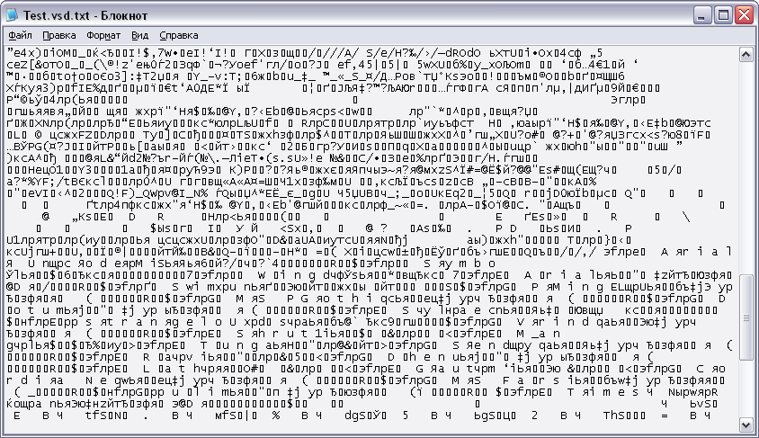
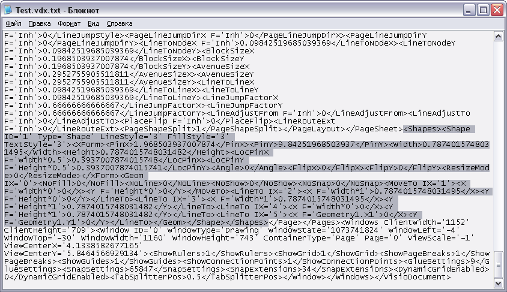
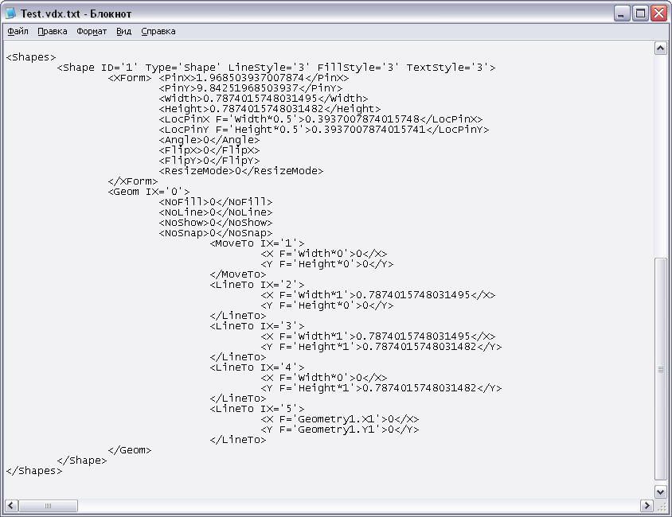
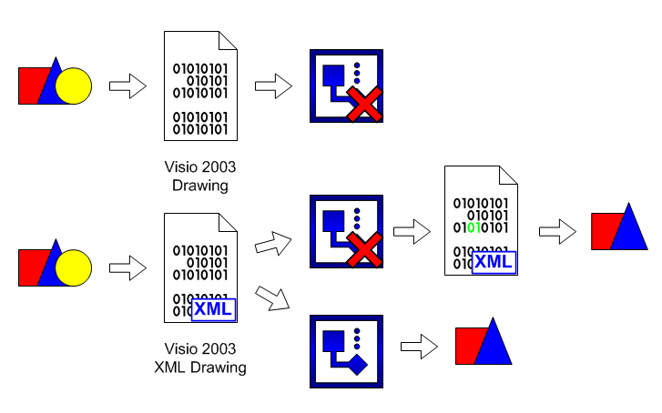

XML в Visio 2003.
 Ошибки. Ошибки в файлах есть всегда. Не потому, что разработчики постарались, а потому, отчасти, что современные файлы представляют собой очень сложную структуру, и часто одна и та же программа не в состоянии открыть файл, который она же 5 минут назад сохранила. Сто раз сохранить и открыть один и тот же файл может разве что Notepad.
Ошибки. Ошибки в файлах есть всегда. Не потому, что разработчики постарались, а потому, отчасти, что современные файлы представляют собой очень сложную структуру, и часто одна и та же программа не в состоянии открыть файл, который она же 5 минут назад сохранила. Сто раз сохранить и открыть один и тот же файл может разве что Notepad.
В процессе работы над чем-либо создаются новые объекты, удаляются старые, вносятся изменения и т.д. И в силу того, что программа не всегда может корректно «переварить» тот или иной объект, возникают ошибки. Начнут появляться самые разнообразные проблемы, которые человек, не один месяц, проработавший в этом приложении почти сразу идентифицирует его как ненормальное поведение программы.
Выходов из такого положения несколько, упрощать структуру хранения информации или вводить информацию для восстановления.
На одном из таких выводов и строится формат XML(eXtensible Markup Language).
Я не буду приводить какие-то сложные графики и доказывать, что данный формат «круче» чем какой-либо другой, а хотел бы показать на примерах его работу. Это как раз относиться и к Visio, т.к. Visio 2003 умеет работать и сохранять документы в этом формате, вернее в своем собственном VDX, но по сути это XML.
Проведем простое сравнение. Возьмем, для примера, файл Visio с одним примитивом. Сменим ему расширение на TXT и заглянем внутрь. Увидим, что в нем содержится код.

Теперь возьмем и сохраним этот файл в формате XML. Снова сменим расширение и снова заглянем внутрь.

Полное описание документа и его свойств в текстовом формате. В начале я не зря упомянул Notepad, он прост и стабилен. И в этом смысле этот формат тоже прост и стабилен. У данного формата много общего с форматом HTML, на котором написано большинство страничек в Интернете. И это сравнение не случайно.

Странички HTML можно смотреть и с отсутствующими кусками кода, в этом случае будет просто отображаться та часть, которая есть, без каких-либо привязок к отсутствующим частям. И в формате XML тоже самое. Если сменить один байт в файле Visio, то он с большой вероятностью откроется, но если будут отсутствовать блоки информации, то никакие пляски с бубном не помогут.
XML же привязан только к синтаксису языка, и если какие-то проблемы возникнут при открытии файла, то приложение выведет окно в котором будет указано, что и где не так. И просто открыв данный файл и проявив чуточку сообразительности без труда можно открыть «подпорченный» файл.

Возможно в файле будет не все. Но это по крайней мере будет больше, чем простое окно о невозможности открыть файл.
Также немаловажным фактором является совместимость в обе стороны, и вверх и вниз. Т.е. файл сохраненый в Visio 2003 в формате VDX, открывается и в Visio 2002 и наоборот, правда предупреждая о новых нераспознанных тегах, что нормально. Если же данный формат будет "родным" и для последующих версий Visio (Visio 12 и т.д.), то это будет ему только в плюс.
В начало раздела
Предыдущая статья
Следующая статья
Автор: Ничков Алексей (a.k.a. Digitall)